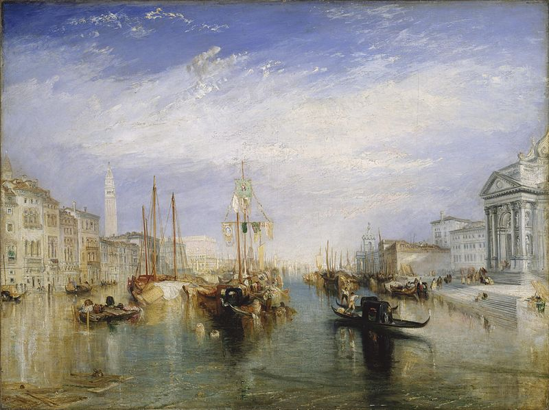

La Serenissima
Do 15 lutego można jeszcze obejrzeć w Fondation Beyeler w Bazylei wspaniałą wystawę zatytułowaną „Venice. From Canaletto and Turner to Monet”.
Wenecja potrafi zawładnąć wyobraźnią. Fondation Beyeler poświęciła temu czarodziejskiemu miastu i jego mitowi niezwykłą wystawę, prezentującą niemal 150 mistrzowskich dzieł — obrazów olejnych i akwarel — pochodzących ze słynnych muzeów i kolekcji prywatnych całego świata.
Po raz pierwszy zgromadzono w jednym miejscu zdumiewające portrety Wenecji pędzla tak znamienitych artystów, jak Canaletto, Francesco Guardi, William Turner, James McNeill Whistler, John Singer Sargent, Edouard Manet, Pierre Auguste Renoir, Odilon Redon i Paul Signac. Perłą ekspozycji jest zbiór malowideł, jakie Claude Monet wykonał w tym mieście w roku 1908. Wystawę uzupełniają reprodukcje fotografii, wykonanych w drugiej połowie XIX wieku.
Jak pisał Rilke przed stu laty:
Miasto nieruchomieje jak przynęta,
co wynurzone dni wywabia z wody.
Pałaców kruche szkło nieomal pęka
w twoim spojrzeniu.